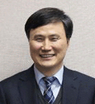

HOME > 회사소개 > CEO 인사말
CEO 인사말

- 안녕하십니까?포스코엠텍 홈페이지를 방문해 주신 고객 여러분 반갑습니다.
- 포스코엠텍은 철강포장 전문업체로 출발하여 오랜 기간 쌓아온 전문 역량을 바탕으로 철강제품 포장과 포장설비 엔지니어링, 철강부원료
생산 분야에서 높은 경쟁력을 발휘해 나가고 있습니다.
새로운 50년의 성장 기반 마련을 위해 포장설비 R&D 및 판매 기반을 더욱 강화하고, 알루미늄 탈산제 최대 생산과 판매체제 유지, 소결망 간광 기술개발과 융융망간 공급 증대 등을 통해 본원 경쟁력 강화 및 사업구조 고도화를 적극 추진해 나갈 것입니다.
또한 도전적인 목표설정과 끊임없는 자기 변화와 혁신으로 핵심역량을 지속 개발하고, 이와함께 신뢰와 화합으로 'With POSCO' 일원 으로서 모든 이해관계자와 상생하고 사회적 책임을 다하는 신뢰받는 기업이 되도록 노력하겠습니다.
시시각각 변화하는 철강 산업의 경영환경과 높아지는 고객의 요구 속에 경쟁력을 갖추고 지속적으로 성장하기 위해 포스코엠텍은 ‘철 그 이상의 가치창조(Engineering the future beyond steel)’라는 비전을 목표로 고객의 기대를 넘어서는 과거와는 차별화된 가치를 담은 새로운 제품과 서비스를 제공하기 위해 노력하고 있습니다.
앞으로도 포스코엠텍은 수요창출형 제품 개발을 통해 고객의 요구를 넘어서는 품질의 제품을 생산하고 글로벌 인재를 육성하는 것은 물론 소통과 공감의 품격 있는 기업문화를 만들어 나가겠습니다.
또한 모든 고객의 가치를 극대화하는 ‘100년 제철소’를 만들기 위해 전 임직원의 열정과 지혜를 모으겠습니다. ‘철의 무한한 가능성’을 통해 세계가 부러워하는 철강기업으로 거듭나는 포스코엠텍의 모습을 지켜봐 주십시오. 앞으로 포스코엠텍의 새로운 비상과 미래를 지켜봐 주십시오. - 포스코엠텍 사장 이희근